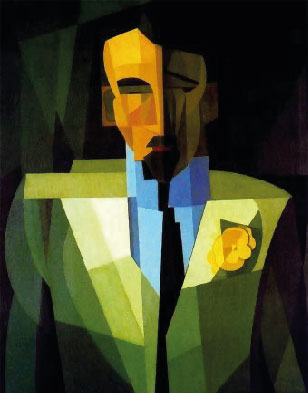
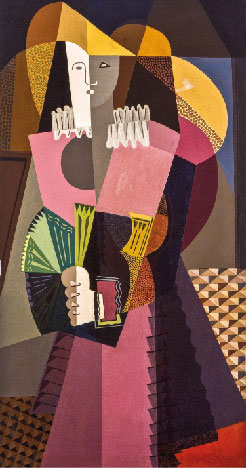
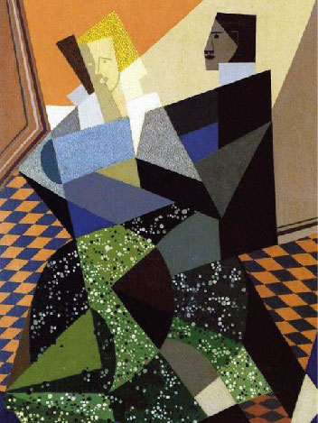
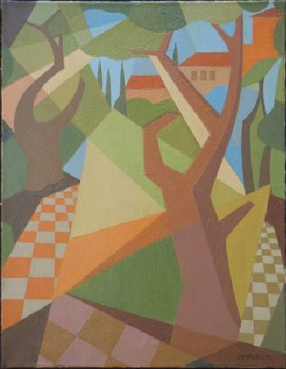

Emilio Pettoruti

Fue un pintor argentino y uno de los introductores del cubismo y el futurismo en América Latina. Su obra rompió con la tradición académica y abrió camino a la modernidad en el arte argentino. Aunque al principio fue rechazado en su país, en Europa se lo reconoció como un artista vanguardista.
Su estilo se caracteriza por el uso de geometrías claras, colores luminosos y composiciones dinámicas que integran música, objetos cotidianos y un sentido poético de la luz. Obras como El Quinteto o La copa verde muestran su capacidad de transformar la realidad en planos geométricos vibrantes.
Modernidad en clave argentina
El enfoque de Pettoruti dentro del cubismo propone una adaptación local: la fragmentación y la geometría no solo representan objetos, sino también transmiten ritmo, música y atmósfera. A diferencia de los cubistas europeos, Pettoruti buscó integrar la identidad argentina en sus composiciones, aportando orden, color y un sentido cultural propio. Sus obras no se limitan a reproducir fórmulas importadas, sino que resignifican el cubismo en clave latinoamericana, mostrando que la modernidad podía tener un rostro propio en el Río de la Plata.
Obras Destacadas


